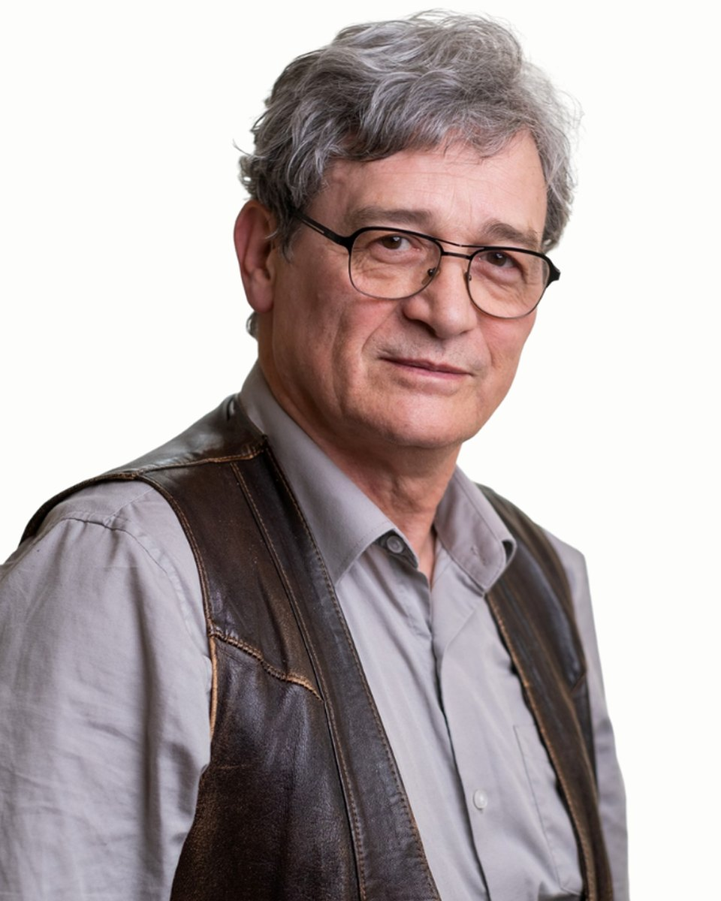

Coach
Szabó
András
Coach, párkapcsolati konzultáns, ifjúsági szakértő
Fogadó kolléga: Vajas Zsuzsanna, pszichológus asszisztens. +36 30 961 1364, hétköznap 9-15. Ő segít, ha nem biztos, hogy Szabó András a megfelelő választás.
Olyan fiatalok világában, különféle problémáik kezelésében, feldolgozásában szereztem nagyon közeli, több évtizedes tapasztalatokat, akiknek a felnőtté válás komoly nehézségekkel járt, akik tizenéves életük közepén, végén valahogyan szembe keveredtek a közvetlen környezetükkel, a családjukkal, a társas környezetükkel.
Hogy átlendülhessenek a nehézségeiken és akadályaikon, persze nem csupán az érintett, bajba keveredő fiatalokat várom, hanem ő személyes környezetüket, szüleiket, barátaikat is, akikkel nem csupán az összesűrűsödött, kritikus helyzeteket, hanem akár az együttélés nyugtalanító félreértéseit és egyensúlyvesztéseit is átbeszélhetjük.
Várom ugyanakkor azokat is, akik egyszer csak úgy érzik, teljesen megakadtak. Mintha elfogyott volna minden erejük, éppen akkor, amikor egyre nagyobb erőfeszítésre van szükségük ahhoz, hogy ne dőljön össze velük minden.
Bármelyikünkkel megtörténhet ugyanis, hogy egyszer csak elakadunk, hogy valahogyan nem úgy megy, mint korábban. Sőt, bárhogyan próbálkozunk egyedül, újra és újra nekikezdünk, egyre kevésbé megy. Nem igazán értjük, hogy nem tudjuk, hogy miért nem tudjuk. Könnyű persze azt mondani, hogy akkor mást kellene csinálni.
Nem kell azt hinnünk, hogy magunkra maradtunk. Azt sem, hogy már minden úgy marad. Talán nem is a szerencse hagyott el.
"Csupán egy jó lépés kell a változáshoz. Csakis olyan lépés, amilyet tudunk. De azt feltétlenül. Persze, csak ha tényleg változtatni akarunk."
Bármit tehetünk, de semmit sem muszáj. Próbáljuk meg, és kezdjünk el róla beszélgetni.
Azoknak tudok inkább segíteni, akik maguk is változni szeretnének, akik meg is tennék mindazt, ami rajtuk múlik, akik mindehhez a saját erejüket keresik. Akik szeretnék hinni abban, hogy van élet problémákon túl.
Amiben segítek
Szabó András saját megfogalmazásában
Amikor a szülő és a tizenéves gyereke nem tudnak beszélni egymással
Amikor a szülő és a tizenéves gyereke nem értik egymást
Rossz társaságba került a felnőtté váló gyerek
Amikor a szülő és a tizenéves gyereke csalódást okoztak egymásnak (lopott otthon vagy máshol, iskolai kudarc, bántották, bántott valakit, drogfogyasztás, bűnelkövetés, korainak gondolt párkapcsolatban a gyerek, megszökött otthonról, terhes lett stb., sehová nem engedik, átkutatják a holmiját, róla döntenek, nélküle, eltiltják a barátjától/barátaitól, nem állnak vele szóba, sőt feléje sem néznek, rákényszerítik valamire, megszégyenítik stb.)
Amikor a felnőtté váló gyerek egyszer csak nem fogad szót, titkai vannak, talán az iskolai teljesítménye is romlik
Képzés és szakmai út
A képzések és a szupervízió az akkreditált szakképzőhely rendjében folynak. Mit jelent ez Önnek
Iskolai végzettség
Népművelő, pedagógia szakos tanár, 1980. Eger
Társas készségek, kompetenciák
Drogprevenciós-egészségfejlesztési szakértő, általános ifjúsági szakértő 2007. ESZA Kht
Ifjúságsegítő vizsgaelnöki felhatalmazás, Oktatási Hivatal 2007.
Coach, Coachline Group Szakmai Közösség 2007.
Drog-prevenciós felkészítés, USA, Ohio, Columbus 1992.
Kommunikációs érzékenységet fejlesztő tréning, 1984
C kategóriás színházrendezői végzettség, 1977 Népművelési Intézet
Felkészítés non direkt csoportvezetésre, 1977
Ifjúsági klubvezető-képző tanfolyam, 1974 FMH
Elismerések
Mobilitás díj, 2011
Magyar Ifjúságért Díj, 1977, 2007
Ashoka ösztöndíj, 2001
Szakmai tapasztalatok
Kapocs Ifjúsági Önsegítő Szolgálat Alapítvány, szakmai vezetés, képzés, fejlesztés, esetkezelés, életviteli tanácsadás, 1992-től
ELTE TÓK, ifjúságsegítés, óraadó tanár, 2000-2017
Civil Rádió, műsorkészítő, szerkesztő, műsorvezető, 1996-tól
Gyakorlatvezető tereptanár, Illyés Gyula Tanárképző Főiskola (Kaposvár), ELTE Szociálpolitikai Tanszék, Vitéz J. Főiskola (Esztergom), Apor Vilmos Katolikus Főiskola (Vác), "Bárczy Gusztáv" Gyógypedagógiai Főiskola, Pszicho-pedagógiai Tanszék, ELTE TÓK, szociális munkás, szociálpedagógus, pszicho-pedagógus, ifjúságsegítő hallgatóknak, 1997-2005
Egy hónapos, egyéni programú, szakmai tanulmányút az USIA vendégeként az Egyesült Államokban, tárgya: szocializáció és zavarai, a korosztályi problémák megelőzése, a felnőtté válást segítő mechanizmusok, 1992
"Bárczy Gusztáv" Gyógypedagógiai Főiskola, Pszicho-pedagógiai Tanszék, szakmai gyakorlatvezető (Almássy téri Szabadidő Központ), 1984-86
Gödöllői Művelődési Központ, sajátélmény csoportok vezetése 16-22 éveseknek, 1982-93
Kollektív amatőrszínházi felkészítő tréning és bemutató nemzetközi színházi csoportok részvételével Milánóban (Comenius: A világ útvesztője és a szív paradicsoma), 1980
PSzínpad, Amatőr színházi csoport irányítása, rendezés, színjátszás (Örkény: Rózsakiállítás, Bodó B.: Brumi, Korniss M.: Halleluja), 1976-80
Kozák téri Ifjúsági Ház, szakmai vezetés, klubvezetés, fejlesztés, konfliktuskezelés, 1974-77
Tanítómesterek
Akiknél a módszereket tanulta
- dr. Alpár Zsuzsa, pszichológus
- Bácskai Júlia, pszichológus
- Mérei Ferenc, pszichológus
- Vekerdy Tamás, pszichológus
Rólam mondták
Kliensek visszajelzései, a hozzájárulásukkal
Egészen jól működnek azok, amikről beszélgettünk
Úgy érzem, most erőre kaptam, bár igazán nem tudom, hogy mitől
Egyszer csak megnyugodtam, és most már könnyebben megy minden
Azt hiszem, mostantól, hogy jobban bízok magamban, újra menni fog
Ha inkább mást keresne
Három kolléga hasonló területekkel. A teljes regiszterben 37 szakember szűrhető.
Következő lépés
Időpont Szabó Andrásnál
Írjon nekünk, vagy hívja ügyfélszolgálatunkat hétköznap 9 és 15 óra között. Az első alkalom 50 perc, díja 15-18 ezer forint alkalmanként. Ha Szabó András naptára tele van, megmondjuk, ki tud hasonló területen fogadni.